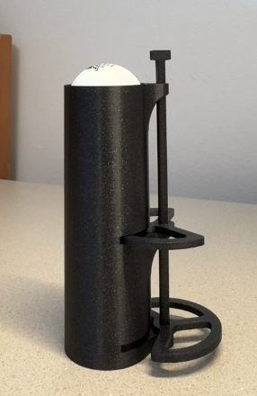
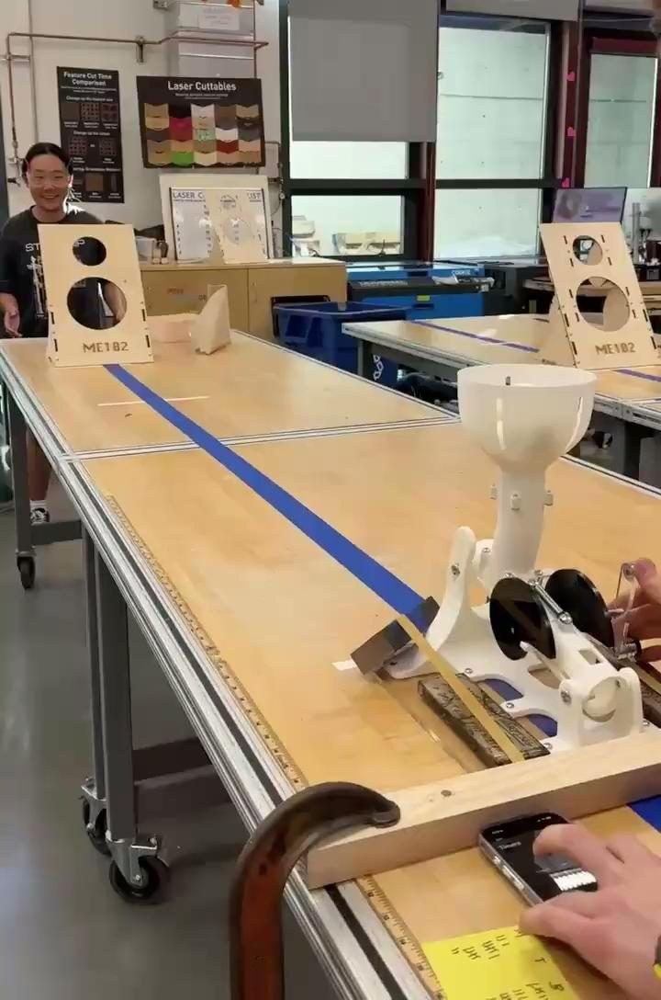
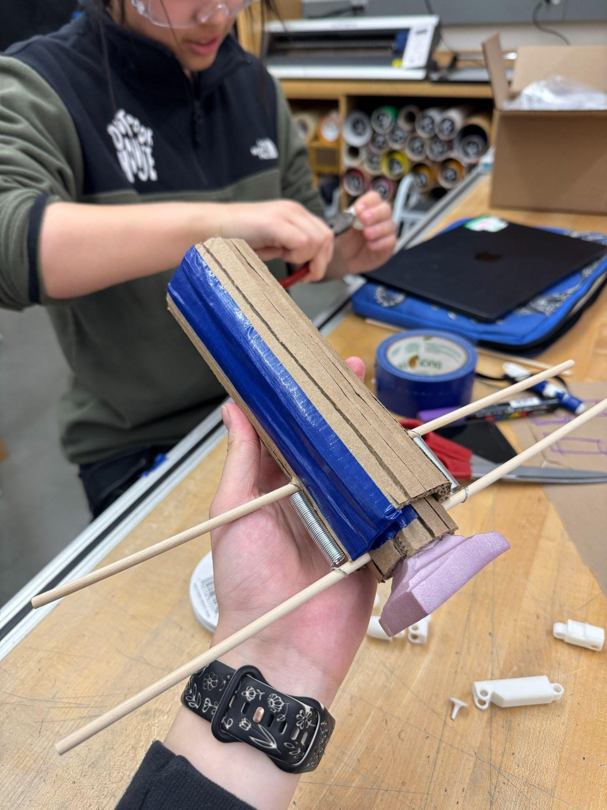
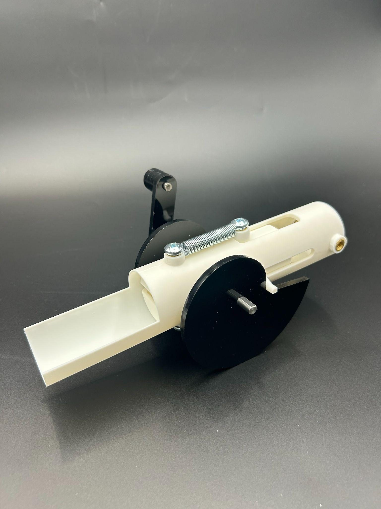
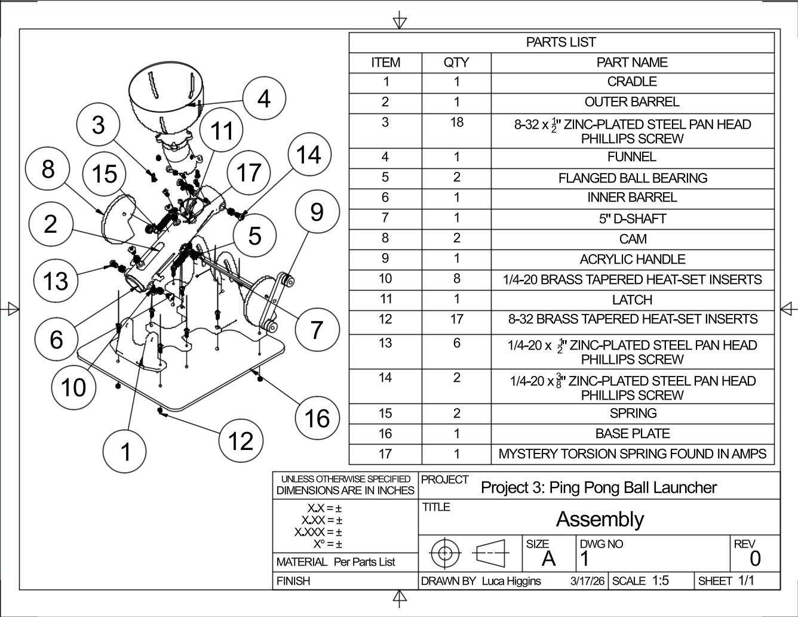

Objective
Build a mechanism that launches ping pong balls, with a reload and release cycle that's easy to repeat and doesn't vary much shot to shot. Our early sketches centered on choosing the right actuation method before committing to a final design.


Design Evolution
We settled on a cam-driven spring mechanism and iterated through it in stages: power mechanism selection and refinement → actuation mechanism selection → barrel refinement → funnel and reloading implementation → support implementation → support and accuracy refinement.
Prototypes
Each prototype answered a specific question. Prototype 1 tested whether extension springs could reliably drive the launch — it worked, with a displacement range of 1 to 2.5 inches. Prototype 2 tested cam actuation and found that acrylic cams against a metal rod ran with relatively little friction. Prototype 3 loosened the barrel to a half-pipe design, cutting friction further and improving power and accuracy. Prototype 4 added a latch synced to the cams so the funnel could reload one ball at a time. The final version reinforced the front support with four additional attachment points, meaningfully improving accuracy.



Analysis & Engineering Drawings
We worked through the spring and ballistics calculations by hand to size the driving mechanism, then produced full assembly and part drawings for fabrication.


Reflection
Our two main challenges were power — balls lost momentum before launch, solved with a looser barrel and tighter tolerances — and accuracy, which was inconsistent after assembly until we significantly shortened the barrel. Reloading worked well from the start and was straightforward to implement, and our time management kept the build well-paced throughout. For a next iteration, we'd downsize the spring for similar performance with less weight, and adjust the reload mechanism so balls don't pop up out of the funnel.